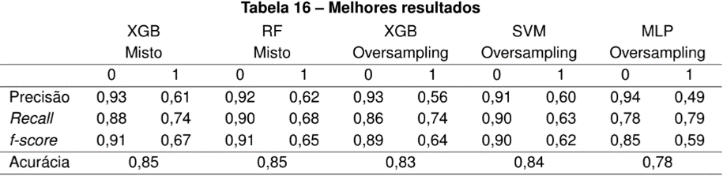
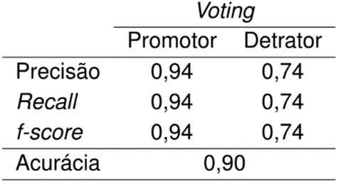
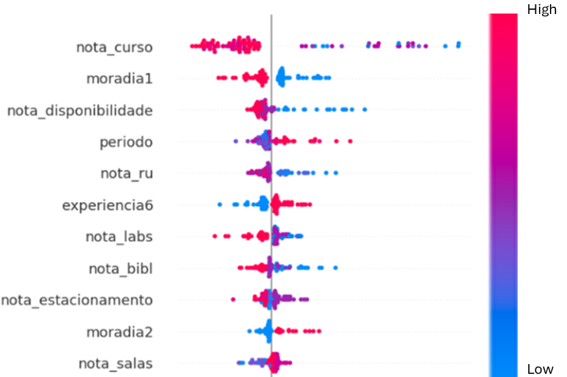
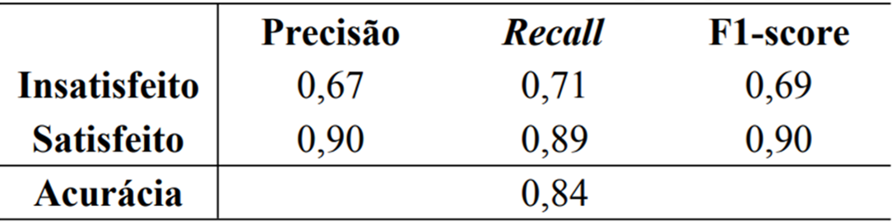
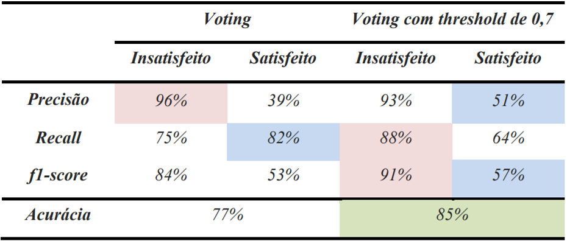
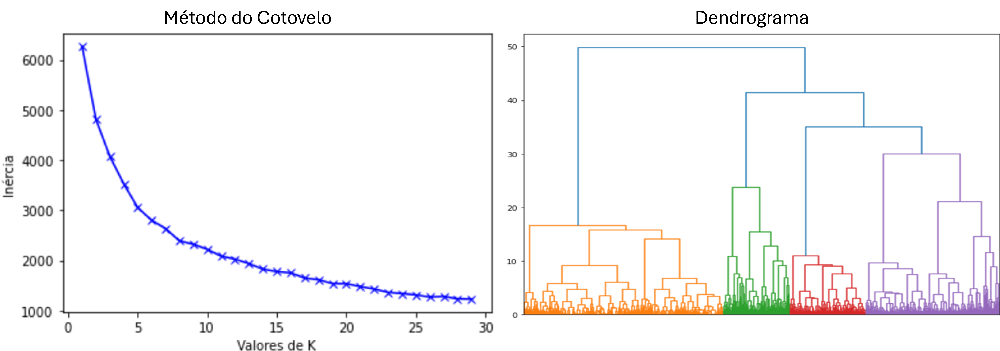

Sobre Mim
Especialista em Ciência de Dados e Engenheiro de Produção, determinado e com muita facilidade para aprender. Tenho como objetivo aplicar meus conhecimentos e técnicas como Cientista de Dados.
Formação
- Mestrado em Computação Aplicada - UTFPR (2025 - Em andamento)
- MBA em Data Science e Analytics - USP (2024 - 2025)
- Formação Cientista de Dados 4.0 - Data Science Academy (2023 - 2024)
- Bacharelado em Engenharia de Produção - UTFPR (2019 - 2023)
Experiências
Residente em Inteligência Artificial - SENAI PR (Jul/2025 - Atual)
- Projetos reais com empresas parceiras
- Tradução de problemas de negócio em problemas analíticos
- Modelos de ML (regressão, classificação, clustering, séries temporais)
- Avaliação de desempenho e validação de métricas
Cientista de Dados - Trucks Control (Mai/2024 - Atual)
- Modelos de visão computacional
- Modelos antifraude
- Deploy via API com Docker
Analista de Dados - Litz Estratégia e Marketing (2023 - 2024)
- Dashboards para varejo, franquias e serviços
- Automação com Python
- Modelos de ML com análise SHAP
Projetos
TCC - Classificação de Satisfação do Estudante
Aplicação de Random Forest, MLP, XGBoost e SVM com ensemble voting. Melhor modelo atingiu 90% de acurácia.
  Satisfação em Aeroportos
Aplicação de Random Forest, KNN, Decision Tree e Naive Bayes.
Satisfação Econômica Latino-Americana
Modelos Random Forest, XGBoost e SVM com ensemble voting.
Clusterização de Acidentes
Aplicação de K-Means e Hierárquico para análise de acidentes.
Publicações
- ENEGEP 2023 - Avaliação da satisfação de usuários de aeroportos
- ENEGEP 2023 - Classificação da satisfação econômica
- ENEGEP 2023 - Técnicas de agrupamento para acidentes